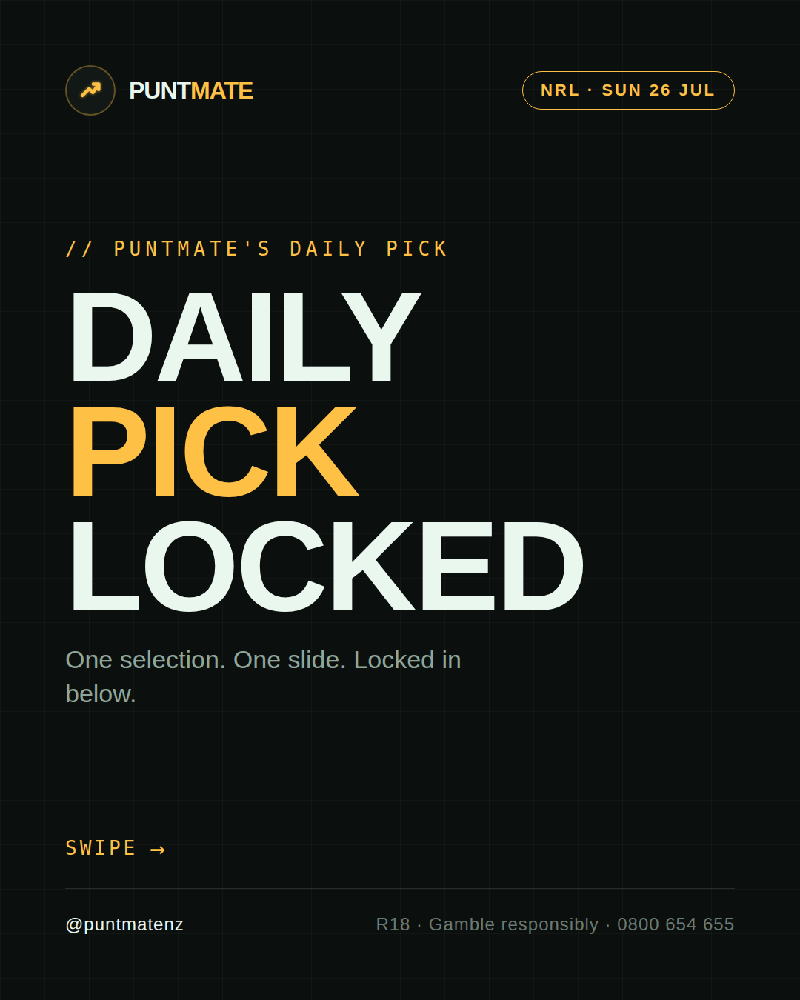
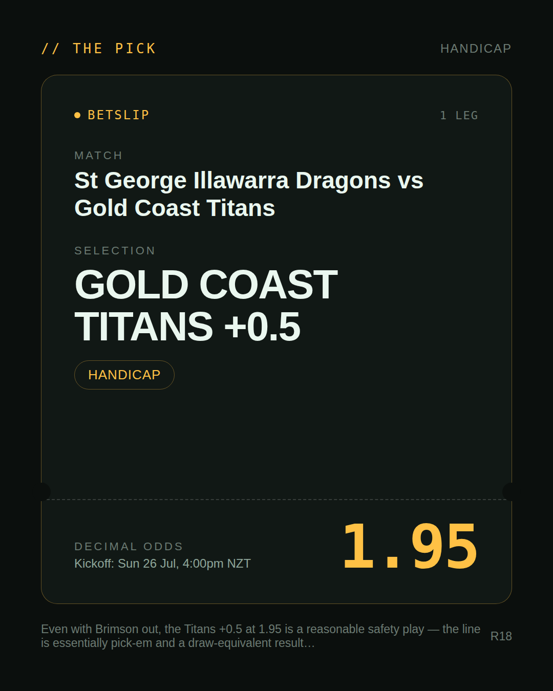
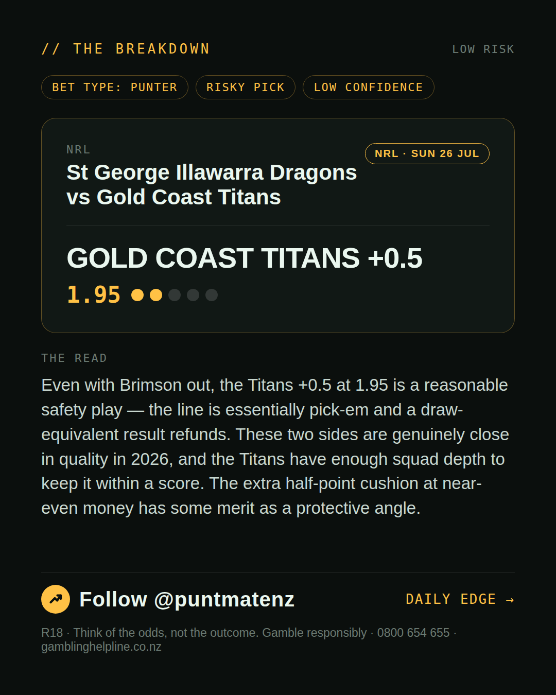
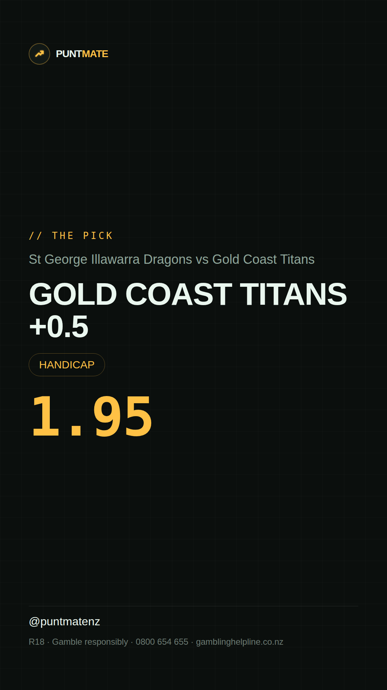

*🎯 PUNTMATE NZ — NRL* 🏟 St George Illawarra Dragons vs Gold Coast Titans *PICK:* GOLD COAST TITANS +0.5 *ODDS:* 1.95 (Handicap) *BET TYPE: PUNTER* _Even with Brimson out, the Titans +0.5 at 1.95 is a reasonable safety play — the line is essentially pick-em and a draw-equivalent result refunds. These two sides are genuinely close in quality in 2026, and the Titans have enough squad depth to keep it within a score. The extra half-point cushion at near-even money has some merit as a protective angle._ ────────────────── 📲 Join Telegram for daily picks ⚠️ For entertainment & informational purposes only. Not advice. 18+.
🎯 NRL — St George Illawarra Dragons vs Gold Coast Titans GOLD COAST TITANS +0.5 @ 1.95 (Handicap) BET TYPE: PUNTER Solid touch here. Not a lock, but the value's real and the form backs it up. Even with Brimson out, the Titans +0.5 at 1.95 is a reasonable safety play — the line is essentially pick-em and a draw-equivalent result refunds. These two sides are genuinely close in quality in 2026, and the Titans have enough squad depth to keep it within a score. The extra half-point cushion at near-even money has some merit as a protective angle. Follow for daily value picks → @puntmatenz ⚠️ For entertainment & informational purposes only. Not advice. 18+. #PuntmateNZ #SportsBetting #NZTAB #NRL
| has_pick | True |
| pick_id | 2026-07-25_St_George_Illawarra_Dragons_vs_Gold_Coast_Titans |
| run_id | 30490802412 |
| generated_at | 2026-07-29T21:03:21.707328+00:00 |
| post_date | 2026-07-25 |
| match | St George Illawarra Dragons vs Gold Coast Titans |
| sport | rugbyleague_nrl |
| sport_label | NRL |
| market | Handicap |
| selection | GOLD COAST TITANS +0.5 |
| odds | 1.95 |
| bet_type | PUNTER_BET |
| bet_type_label | BET TYPE: PUNTER |
| bet_type_reason | Solid touch here. Not a lock, but the value's real and the form backs it up. Even with Brimson out, the Titans +0.5 at 1.95 is a reasonable safety play — the line is essentially pick-em and a draw-equivalent result refunds. These two sides are genuinely close in quality in 2026, and the Titans have enough squad depth to keep it within a score. The extra half-point cushion at near-even money has some merit as a protective angle. |
| classification | RISKY_PICK |
| risk | RISKY_PICK |
| confidence | LOW |
| confidence_label | LOW |
| final_explanation | Even with Brimson out, the Titans +0.5 at 1.95 is a reasonable safety play — the line is essentially pick-em and a draw-equivalent result refunds. These two sides are genuinely close in quality in 2026, and the Titans have enough squad depth to keep it within a score. The extra half-point cushion at near-even money has some merit as a protective angle. |
| public_caution | Keep this one light — the value's there but so is the uncertainty. |
| theme | night |
| carousel_paths | ['data/review/2026-07-25_St_George_Illawarra_Dragons_vs_Gold_Coast_Titans/cover.png', 'data/review/2026-07-25_St_George_Illawarra_Dragons_vs_Gold_Coast_Titans/tip.png', 'data/review/2026-07-25_St_George_Illawarra_Dragons_vs_Gold_Coast_Titans/breakdown.png'] |
| carousel_urls | ['https://raw.githubusercontent.com/kingofthecastle24/puntmate/main/data/cards/2026-07-25_St_George_Illawarra_Dragons_vs_Gold_Coast_Titans_night_1_cover.png', 'https://raw.githubusercontent.com/kingofthecastle24/puntmate/main/data/cards/2026-07-25_St_George_Illawarra_Dragons_vs_Gold_Coast_Titans_night_2_tip.png', 'https://raw.githubusercontent.com/kingofthecastle24/puntmate/main/data/cards/2026-07-25_St_George_Illawarra_Dragons_vs_Gold_Coast_Titans_night_3_breakdown.png'] |
| story_path | data/review/2026-07-25_St_George_Illawarra_Dragons_vs_Gold_Coast_Titans/story.png |
| story_url | https://raw.githubusercontent.com/kingofthecastle24/puntmate/main/data/cards/2026-07-25_St_George_Illawarra_Dragons_vs_Gold_Coast_Titans_night_story.png |
| intended_platforms | ['telegram', 'instagram_feed', 'instagram_story', 'facebook'] |
| workflow_state | GENERATED |
| has_punter_multi | False |
| has_gambler_multi | False |
| has_degenerate_multi | False |